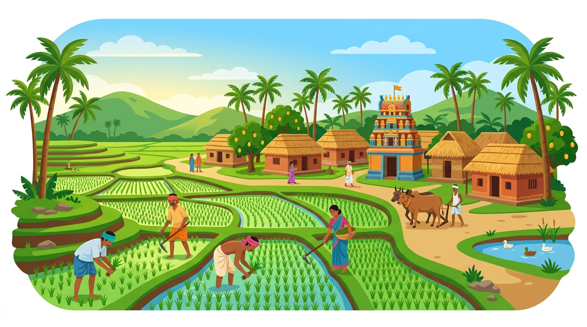
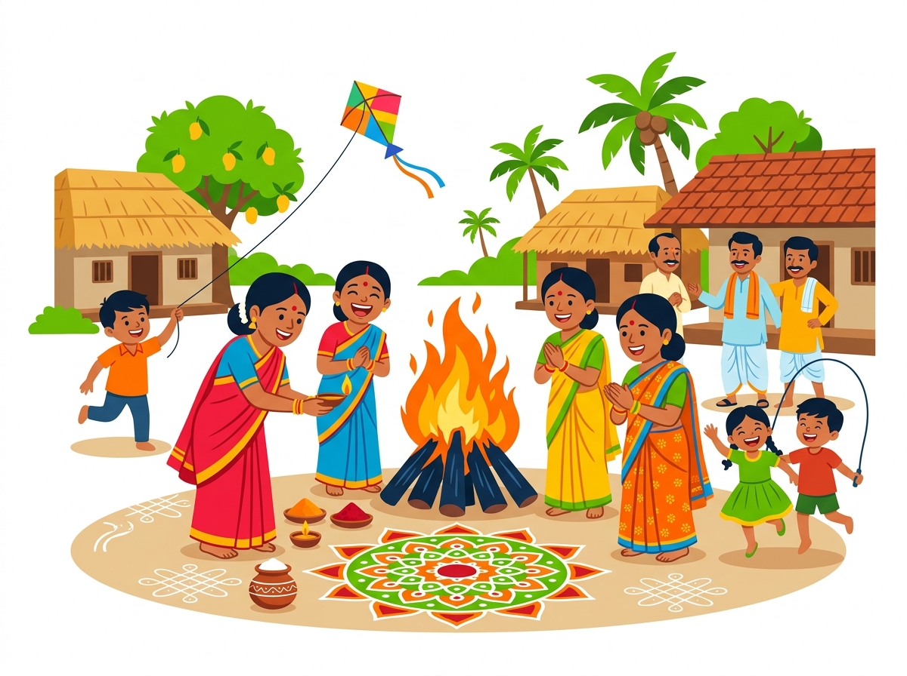
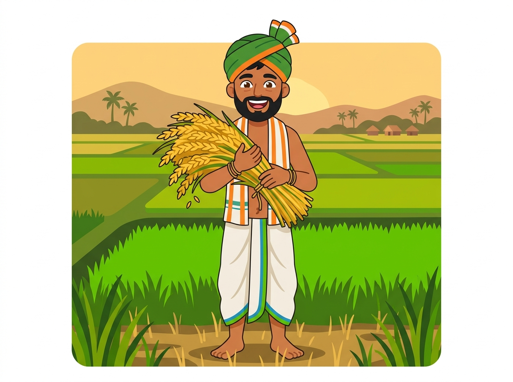

మన ఊరు
పణుకుపేట!
Where golden paddy fields meet centuries of tradition. Our village — ~1,074 people, 275 families — is one big family rooted in love, land, and legacy.

Where We Are
Nestled in Seethanagaram Mandal, Parvathipuram Manyam District. Just 7 km north of Bobbili town — surrounded by green forests, rivers, and fertile plains.
Our Roots
Historically part of the Vizianagaram district before administrative reforms. The village sits near Kasapeta and Antipeta.
Panchayat
Panukupeta has its own Grama Panchayat — a proud mark of the village's self-governing identity and community spirit.
Paddy Heartland
The Seethanagaram Anicut irrigation system powers our rice fields. Paddy is the soul of our economy, identity, and seasonal celebrations.
Mana Pandugalu — మన పండుగలు!
Life in Panukupeta dances to the rhythm of seasons and festivals. From the blazing Bhogi bonfire of Sankranti to the vibrant colors of the village deity's Jatara, every festival is a reunion of hearts.
- 🔥 Bhogi & Sankranti — Harvest celebration, kite-flying & rangoli
- 🛕 Ammavari Jatara — Village deity festivals with drums & dance
- 🐘 Vinayaka Chavithi — Festive youth pandals, devotional bhajans & celebrations
- 🌙 Mahasivaratri & Ugadi — Temple festivities and community grams


The Farmers Feed the World!
Paddy is our pride. The fertile land, powered by the Seethanagaram Anicut, yields bountiful harvests of rice each Kharif season. Our farmers are the backbone of the village — and of the nation.
- 🌾 Main Crop: Paddy (Rice) — the staple of Andhra
- 🌽 Other Crops: Millets, Maize, Groundnut, Sugarcane
- 💧 Irrigation: Seethanagaram Anicut canal network
- 🏭 Rice Mills: Strong processing infrastructure around Bobbili
- 🤝 Rythu Seva: Government-backed farmer support centers
Our Neighborhood!
Panukupeta sits in one of Andhra's most historically rich regions
Bobbili Fort
Historic royal fort — 7 km south. Site of the legendary Battle of Bobbili (1757).
~7 kmBobbili Veena Centre
Home of the traditional Saraswati Veena — a UNESCO-heritage-level craft unique to Bobbili.
~7 kmSambara Polamamba Temple
Revered local temple attracting devotees from across the region for annual Jatara.
~10 kmThonam Waterfalls
A beautiful natural waterfall in the scenic forests of the Parvathipuram Manyam region.
~25 kmBobbili War Memorial
A commemorative stupam honoring the brave warriors of the historic 1757 Battle of Bobbili.
~7 kmVizianagaram Town
District headquarters with Vizianagaram Fort, Pydithalli Ammavari Temple, and city amenities.
~40 kmOne Village, One Big Family!
Whether you live right here in Panukupeta, or you've moved to Hyderabad, Bengaluru, the Gulf, or the USA — you're still part of our family. panukupeta.family is your digital home.
- 🌍 Diaspora Connect: Find villagers across the world
- 🩸 Blood Donor Network: Emergency donor directory
- 🎓 Youth Mentorship: Education & career guidance
- 🏆 Village Achievements: Celebrate our pride moments
- 📢 Festival Alerts: Never miss a village event
Vinayaka Chavithi Chandas (వినాయక చవితి చందాలు 🕉️)
Power Youth - Panukupeta (పవర్ యూత్ - పణుకుపేట) • 2026 గణేష్ చతుర్థి ఉత్సవాల పారదర్శక చందాల నివేదిక (Synced live from ChandaBook).
Where is Panukupeta?
Come visit us — or just drop a pin and say hello from wherever you are!
Frequently Asked Questions
Everything you want to know about Panukupeta (పణుకుపేట) Village
📍 Where is Panukupeta village located? (పణుకుపేట ఎక్కడుంది?)
Panukupeta (పణుకుపేట / పానుకుపేట) is located in Seethanagaram Mandal, Parvathipuram Manyam District, Andhra Pradesh. It is situated just 7 km north of Bobbili and about 150 km from Visakhapatnam (Vizag).
📮 What is the postal Pincode of Panukupeta? (పిన్కోడ్ ఎంత?)
The official Pincode of Panukupeta is 535546. The village is serviced under the Seethanagaram Sub-Post Office.
🏛️ Which Grama Panchayat and Mandal does it belong to?
Panukupeta functions as its own independent Grama Panchayat in Seethanagaram Mandal. It has about 275 households and ~1,074 residents.
🚌 How do I reach Panukupeta by bus or train?
The nearest major town and railway station is Bobbili (VBL), located 7 km away. From Visakhapatnam or Vizianagaram, take an APSRTC bus or train to Bobbili, then local autos or buses to Panukupeta.
🌾 What are the primary crops and agriculture in Panukupeta?
Paddy (వరి / Rice) is the chief crop, irrigated by the Seethanagaram Anicut canal. Other crops include millets, sugarcane, maize, and pulses, supported by local Rythu Seva centers.
🌐 What is panukupeta.family?
panukupeta.family is the official community website uniting all Panukupeta residents, families, and worldwide diaspora with a digital village registry, festival calendar, and directory.
పణుకుపేట కుటుంబంలో చేరండి!
కేవలం ఒక క్లిక్తో మన ఊరి అధికారిక WhatsApp గ్రూప్లో చేరండి — ఊరిలో ఉన్నా, దూరంగా ఉన్నా మనమంతా ఒక్కటే!
Connect with our official Village WhatsApp Community in one click — wherever you are, we are one big family!
Panukupeta Village (పణుకుపేట) Community
మన ఊరు · మన ప్రజలు · మన జ్ఞాపకాలు
Daily updates, panchayat announcements & development progress
Sankranti, Polamamba Jatara schedules & photo sharing
24/7 blood donor network for villagers in emergencies
Connect with native villagers in Vizag, Hyderabad, Gulf & USA